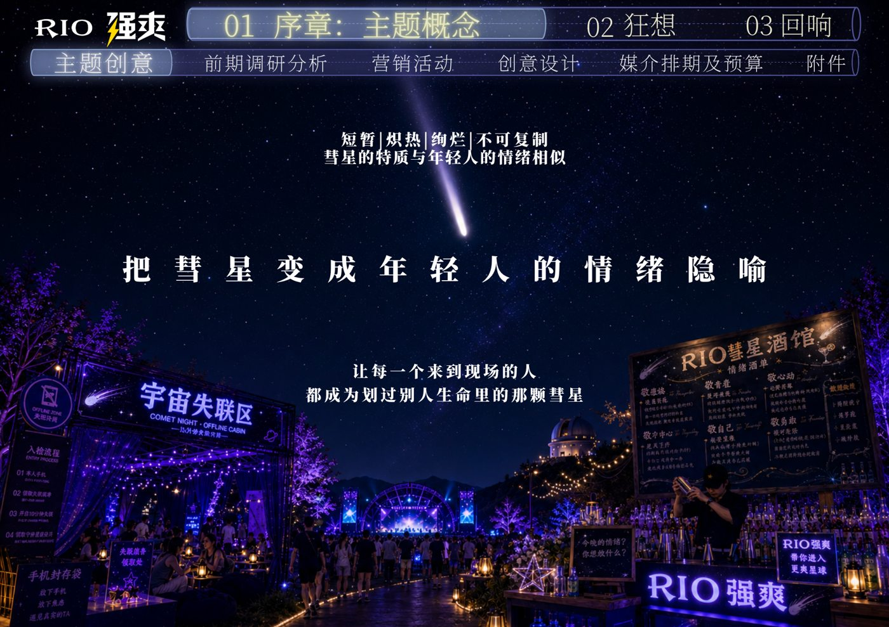
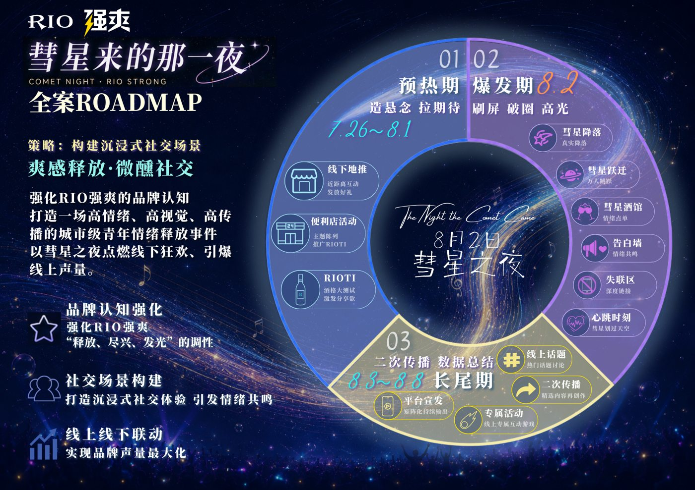

0项目背景
这是为 RIO 强爽参加中国大学生广告艺术节学院奖而做的整合传播策划命题：围绕产品的社交属性，产出一个能够制造线上话题、也能在真实社交场景中落地、还能被用户二次传播的线下社交事件策划案，帮助品牌建立"热烈、青春的微醺社交"场景绑定。
核心命题不是"想一个好玩的点子"，而是把年轻人的某种社交情绪，翻译成一场他们真的愿意来、愿意拍、愿意发的活动。
1我的角色
3 人团队的领队，统筹创意方向、方案结构、视觉定调、提案呈现与分工排期；并独立负责其中活动网站的技术落地（AI 协作开发）。
2关键动作
① 用户洞察 → 核心创意
研读行业白皮书、竞品社交营销打法与年轻用户画像，提炼出当代年轻人"短暂而炽烈"的社交情绪——很多社交像彗星一样，短暂相遇、却足够耀眼。由此提出核心创意概念「彗星之夜」，用彗星相遇的意象映射微醺状态下热烈、自由的社交体验。
② 整合传播方案与互动机制设计
从"短暂、炽热、绚烂、不可复制"的彗星特质出发，提出核心创意「把彗星变成年轻人的情绪隐喻」——让每一个来到现场的人，都成为划过别人生命里的那颗彗星；并把创意落成一张分阶段的全案 ROADMAP：


- 设计覆盖活动全流程的互动场景：人格测试预热网站、彗星限定酒馆、观星区、宇宙失联区、实时告白墙等。
- 规划"线上测试引流 → 线下主题事件体验 → 用户自发内容二次传播"的完整参与链路与媒介排期。
- 确定蓝紫霓虹夜的整体视觉体系，以"主题乐园 + 音乐会"形式呈现一场沉浸式品牌社交事件。
③ 用 AI 协作，把提案做成一个真网站
没有止步于 PPT。我借助 AI 辅助编程、与 AI 共同迭代代码，用 GitHub 管理项目版本，并在阿里云购买域名完成部署，把策划案中的线上预热环节做成了一个可以直接打开体验的网站 Demo。
3成果
1 份完整整合传播策划案
1 个自有域名上线可体验网站
5+ 个可落地的线下互动机制
方案兼具创意完整度与落地性，网站经 GitHub 管理代码、阿里云域名部署后可公开访问。这也是我第一次以非技术背景，完整跑通"想法 → 方案 → 数字产品上线"的全过程。
4复盘
- 好创意要经得起落地性拷问。真正成熟的策划案要同时回答执行成本、用户参与门槛和现场安全边界，不能只停在视觉和概念。
- AI 是放大器，但判断在人。AI 能快速生成代码和方案草稿，而创意方向、体验取舍和细节调试仍需要自己把关——这次让我确信"非技术背景也能用 AI 交付数字产品"。
- 遗憾与改进：方案没有真实落地数据。如果重来，我会先做一次校园快闪做小范围验证，用真实的参与和传播数据反哺方案，而不是只在提案中推演。